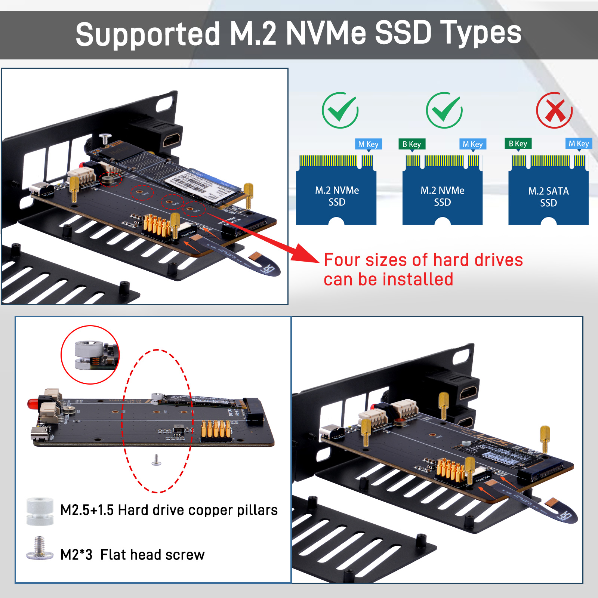
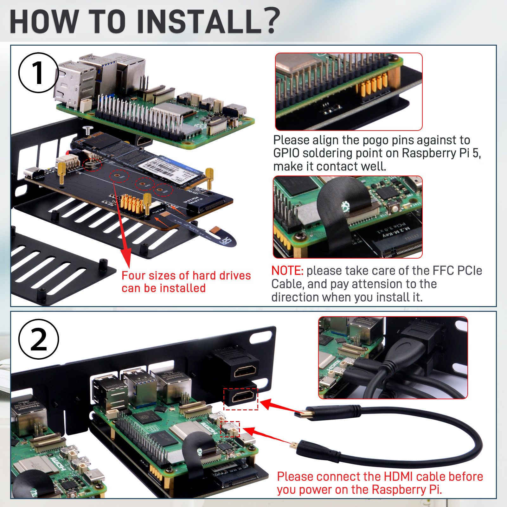

DeskPi Rackmate 10-inch 1U Rack Mount with PCIE NVME Board for Raspberry Pi 5
- SKU: DP-0039
- Name: DeskPi Rackmate 10-inch 1U Rack Mount with PCIE NVME Board for Raspberry Pi 5
Description
The 1U RackMount is specifically designed for the Raspberry Pi 4B and Raspberry Pi 5, serving as a robust and efficient rack solution to house these single-board computers within a standard 10-inch server rack. Ideal for data centers or network installations that require space-saving while looking to expand computing capabilities, this 1U rack is tailored to perfectly accommodate the Raspberry Pi 4B and Raspberry Pi 5, ensuring optimal compatibility and performance.

Features
-
Standard 1U Size: Perfectly fits into a 10-inch server rack, saving space while providing additional computing power.
-
Raspberry Pi Specific Design: Tailored specifically for the Raspberry Pi 4B and Raspberry Pi 5, ensuring the best compatibility and performance.
-
Convenient Access: Designed with user convenience in mind, making all critical ports and cards easily accessible.
-
Durable Construction: Made from high-quality carbon steel with a matte black powder coat finish, ensuring durability and a professional appearance.
-
Efficient Cooling: There is ample space between the Raspberry Pis for heat dissipation.
-
Scalability: Capable of housing multiple Raspberry Pi 4B and Raspberry Pi 5 units, supporting the construction of high-performance computing clusters.
-
Versatile Applications: Suitable for a variety of applications, including server rooms, home automation centers, and more, making it an ideal choice for tech enthusiasts and professionals alike.
-
Easy Assembly and Disassembly: Components are secured with hand-tightened screws, allowing for convenient adjustments and removal.
-
Rackmount Form Factor: Designed to fit into a 1U rack space, making it suitable for data centers or other environments where space is at a premium.
-
Versatility: The Rackmount can be configured in various ways to suit different use cases, whether for development, testing, or deployment in a production environment.
Specifications
-
Form Factor: 1U Rackmount design suitable for standard 10-inch racks.
-
Raspberry Pi Compatibility: Specifically designed for Raspberry Pi 5 and Raspberry Pi 4B models.
-
PCIe Expansion: Supports M.2 NVMe SSDs in 2230, 2242, 2260, and 2280 form factors. Provides a PCIe interface for high-speed data transfer. NOTE: This function supports Raspberry Pi 5 only!
-
I/O Connectivity: Rear I2C interface via PogoPin connectors for external peripherals. GPIO4 pin for programmable LED control.
-
LED Indicator: Red LED for device identification or status indication. Programmable through software to show different statuses.
-
Physical Security: Hand-tightened screws for secure mounting of Raspberry Pi devices and OLED display. Ensures stability and ease of maintenance.
-
Power Requirements: Compatibility with Raspberry Pi's standard power supply.
-
Material and Construction: Durable metal construction for the rackmount chassis. High-quality components for reliable performance.
-
Mounting Options: Standard rackmount holes for easy installation into a rack. Includes additional mounting accessories for different setups.
-
Software Compatibility: Compatible with Raspberry Pi's operating system and software ecosystem.
-
Support for GPIO programming: for custom LED and device control.
Size and Design
- Height: 1U
- Width: 10 inches
- 2 * Slot for Raspberry Pi
- Compact design to save rack space and fit standard 19-inch racks
Fit for DeskPi Rackmate series
- For Rackmate T1 and Rackmate T0

PCIe M.2 NVMe expansion board supported
Supported NVMe SSD Types

Optional Accessories List
How to assemble it
- Please assemble it according to following figures.

Package Includes

How to enable PCIe function on Raspberry Pi 5?
To enable PCIe functionality on the Raspberry Pi 5, follow these steps:
-
- Enable the PCIe External Connector:
By default, the PCIe connector on the Raspberry Pi 5 is not enabled. To enable it, you need to add a configuration parameter to the
config.txtfile located in the/boot/firmwaredirectory. You can use either of these lines:
- Enable the PCIe External Connector:
By default, the PCIe connector on the Raspberry Pi 5 is not enabled. To enable it, you need to add a configuration parameter to the
After adding the line, reboot your Raspberry Pi for the changes to take effect.
- 2.Enable PCIe Gen 3.0 (Optional):
The Raspberry Pi 5's PCIe connection is certified for Gen 2.0 speeds. However, if you want to attempt using Gen 3.0 speeds, add the following line to the
config.txtfile as well:
Be aware that the Raspberry Pi 5 is not certified for Gen 3.0 speeds, and using this setting may result in instability . 3.Booting from PCIe: If you intend to boot from a device connected via PCIe, such as an NVMe SSD, you will need to modify the boot order in the EEPROM. Use the following command to edit the EEPROM configuration:
Then, change the BOOT_ORDER line to include NVMe in the boot order:
This setting will make the Raspberry Pi attempt to boot from an NVMe device connected to the PCIe port .
How to light up identical LED?
To light up UID LED indicator on a Raspberry Pi 4B or 5, you'll make sure the GPIO Pin of the UID LED connected to.
GPIO (General Purpose Input/Output) pins on the Raspberry Pi.
Steps
- Identify GPIO Pins:
GPIO4 - Power On: Make sure your Raspberry Pi is powered off before connecting the LED. Once everything is connected, you can power on your Raspberry Pi.
- Software Setup: You'll need to write a small program to turn the GPIO pin on and off to control the LED. You can use Python with the
gpiozerolibrary orRPi.GPIOlibrary to control the GPIO pins.
Example Python Code with gpiozero:
from gpiozero import LED
from time import sleep
led = LED('GPIO4')
while True:
led.on()
sleep(1)
led.off()
sleep(1)
Example Python Code with RPi.GPIO (For Raspberry Pi 4B):
import RPi.GPIO as GPIO
import time
# Set the GPIO mode
GPIO.setmode(GPIO.BCM)
GPIO_PIN = 4
# Set up the GPIO pin as an output channel
GPIO.setup(GPIO_PIN, GPIO.OUT)
while True:
GPIO.output(GPIO_PIN, GPIO.HIGH) # Turn on the LED
time.sleep(1)
GPIO.output(GPIO_PIN, GPIO.LOW) # Turn off the LED
time.sleep(1)
# Clean up the GPIO pins before exiting the program
GPIO.cleanup()
Safety Tips:
Be careful not to short any pins on the Raspberry Pi.
Accessories Purchase URL


-
Rackmate 10-inch 2U Rack Mount with PCIE NVME Board for Raspberry Pi 5: DP-0046
-
Rackmate 10-inch 1U Rack Mount with PCIE NVME Board for Raspberry Pi 5: DP-0039
-
Rack shelf DP-0031
-
Blank Pannel DP-0032
-
SBC shelf DP-0033
-
10-Inch Network Switch DP-0034
-
Mini ITX shelf DP-0035
-
CAT6A Ethernet Cable(0.2M) L-0094
-
CAT6A Ethernet Cable(0.5M) L-0095
-
DC PDU Lite 7-CH 0.5U for DeskPi Rackmate T1:DP-0042
-
10-inch Server Rack 0.5U Rack Cable Management Panel-with 3 D-Rings: DP-0039
Optional Accessories
- SKU:DP-0042
- SKU:DP-0044
- SKU:DP-0046
- SKU:DP-0039
- SKU:DP-0055 [NEW]
- SKU:DP-0056 [NEW]
- SKU:DP-0073 [NEW]
Amazon Links:
- DeskPi RackMate T1:
- Network Patch Panel 12 Port CAT6 10inch 0.5U
- SBC shelf 10 inch 1U Rack
- Mini ITX shelf 10 inch 1U Rack
- Blank Pannel 10 inch 1U Rack
- SBC shelf 10 inch 1U Rack, with 2PCS Micro HDMI to HDMI Adapter Board for Raspberry Pi 5 / Pi 4B
- Micro HDMI to HDMI Adapter Board for Raspberry Pi 5 / Pi 4B
- GeeekPi 4PCS Cat6A Ethernet Cable, Snagless Short Shielded Network Cable, White (20 cm/0.65 ft)
US Store (0.2m)
UK Store (0.2m)
UK Store (0.5m)
- Rack shelf 10 Inch 0.5U Rack Shelf
- DeskPi 10inch Server Rack 0.5U Rack Cable Management Panel-with 3 D-Rings
- DeskPi DC PDU Lite 7-CH 0.5U for DeskPi Rackmate T1